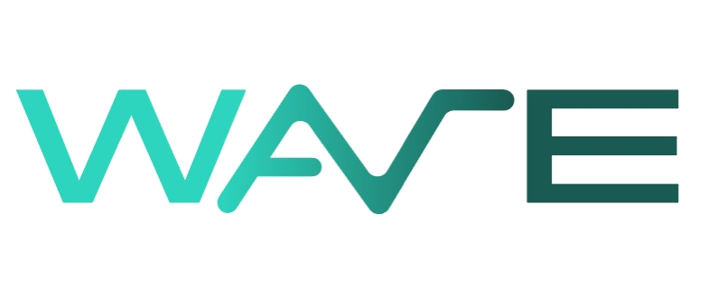

Advisory
We don't start with presentations or pre-built solutions. We start by finding where your business is losing margin. Every recommendation is backed by evidence from your business.
No lengthy proposals. No commitment upfront. We follow a clear four-step process.
Choose the level of support that fits your business. Start with an audit, prove the value, then scale when you're ready.
A detailed review of your margins. You'll see where profit is being lost, why it's happening, and which issue should be addressed first.
A focused engagement to resolve the highest-impact issue identified during the audit.
Continuous strategic support for businesses that want to protect margins, improve performance, and make better decisions with confidence.
Start with the free diagnostic or book a free 20-minute consultation. We'll help you decide the right next step.